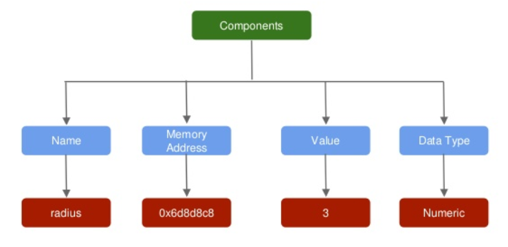

Chapter 3 Variables in R
3.1 Introduction
In the previous chapter, we learnt to install RStudio. In this chapter, we will learn about variables and data types. You can skip this chapter, if you have prior experience in any other programming language.
3.2 What is a variable?
- variables are the fundamental elements of any programming language
- they are used to represent values that are likely to change
- they reference memory locations that store information/data
Let us use a simple case study to understand variables. Suppose you are computing the area of a circle whose radius is 3. In R, you can do this straight away as shown below:
3.14 * 3 * 3## [1] 28.26But you cannot reuse the radius or the area computed in any other analysis or computation. Let us see how variables can change the above scenario and help us in reusing values and computations.
3.3 Creating Variables
A variable consists of 3 components:
- variable name
- assignment operator
- variable value
We can store the value of the radius by creating a variable and assigning it the value. In this case, we create a variable
called radius and assign it the value 3 using the assignment operator <-.
radius <- 3
radius## [1] 3Now that we have learnt to create variables, let us see how we can use them for other computations. For our case study,
we will use the radius variable to compute the area of a circle.
3.4 Using Variables
We will create two variables, radius and pi, and use them to compute the area of a circle and store it in another variable area.
# assign value 3 to variable radius
radius <- 3
# assign value 3.14 to variable pi
pi <- 3.14
# compute area of circle
area <- pi * radius * radius
# call radius
radius## [1] 3# call area
area## [1] 28.263.5 Components of a Variable

3.6 Naming Conventions
- Name must begin with a letter. Do not use numbers, dollar sign (
$) or underscore (_). - The name can contain numbers or underscore. Do not use dash (
-) or period (.). - Do not use the names of keywords and avoid using the names of built in functions.
- Variables are case sensitive;
averageandAveragewould be different variables. - Use names that are descriptive. Generally, variable names should be nouns.
- If the name is made of more than one word, use underscore to separate the words.